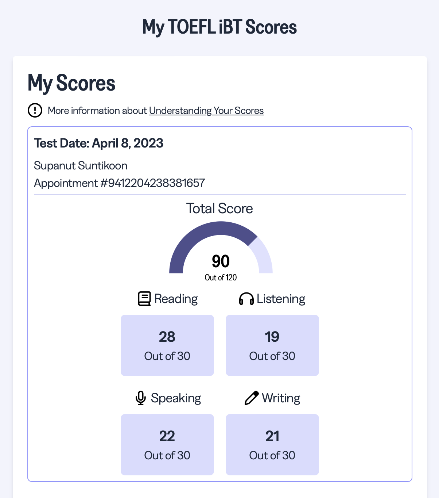
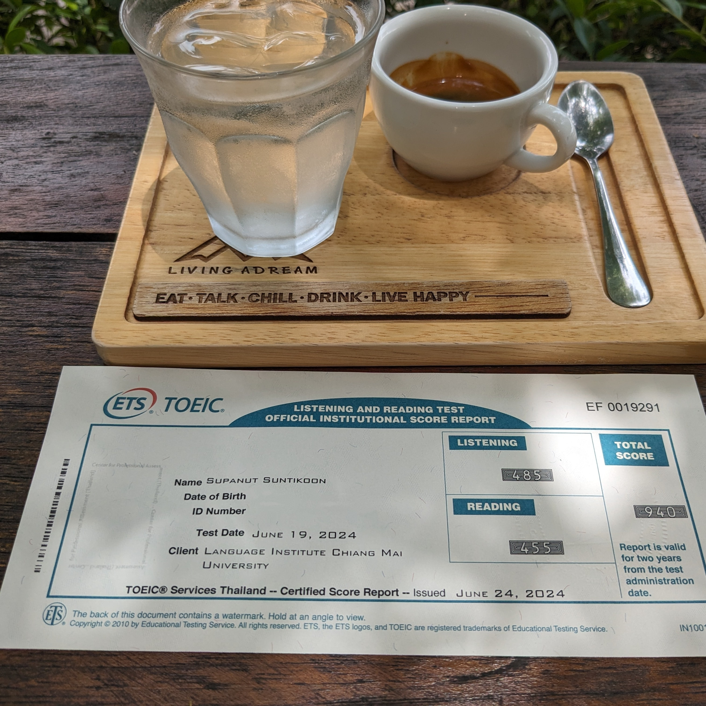

My Language Journey
My passion for English began in middle school when I dove into an English-Thai dictionary, determined to master the language word by word. That curiosity has fueled my journey ever since.
Fast forward to today, I’m still learning and growing, with a TOEFL iBT score of 90/120 and a TOEIC score of 940. As a tutor, I now teach English to Thai learners and Thai as a second language to English speakers, sharing my love for language with students worldwide.

TOEFL iBT: 90/120

TOEIC: 940
Stay tuned for more updates and learning opportunities!